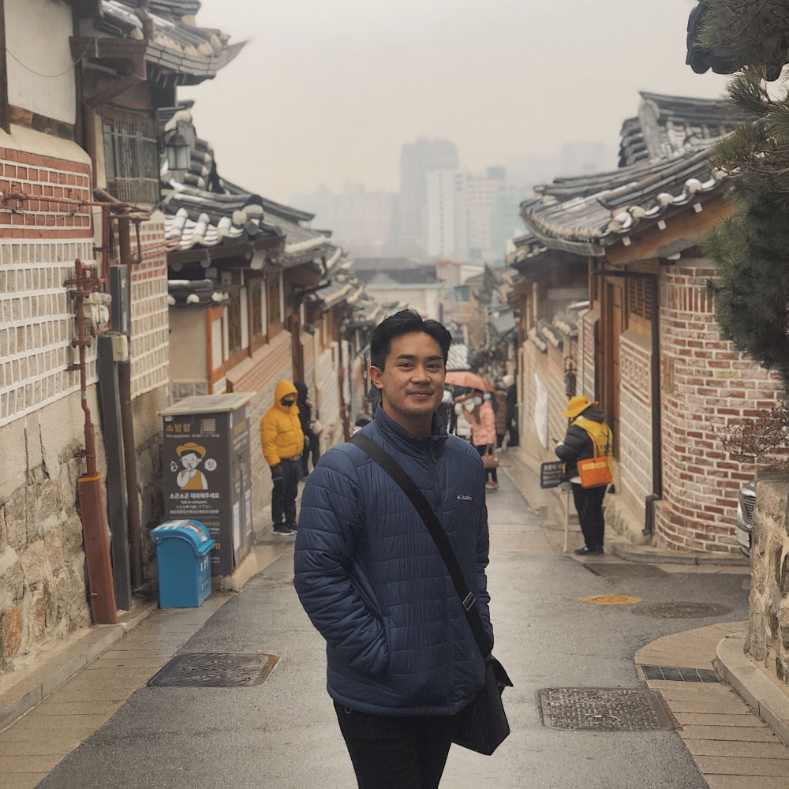

Eli's journey as an artist, like any artist, began with an innate passion to create and a blooming curiosity of the world. As a child, Eli was heavily involved in art. He kept notebooks filled with sketches of animals and has entered artwork into competitions and exhibitions as early as elementary school. He further developed his skills in art and mastered techniques in high school. His proud accomplishment is winning the Fewster Family Scholarship Award at the 2015 Art Under 20 Show for his drawing Finding Francine, which is found in the Archives gallery.
Eli's journey as an artist took a sudden turn when he decided to pursue pre-medical studies at the University of Miami. After three years of preparing himself for medical school and ultimately got rejected, Eli reflected on his passions and goals. After taking a class in sculpture during his final year of university, he realized that there was a way to fuse both his passion for science and for art. As a graduated student, Eli is currently building his portfolio to pursue a master's degree in medical illustration. Be sure to check out his latest entries as he continues down this path.